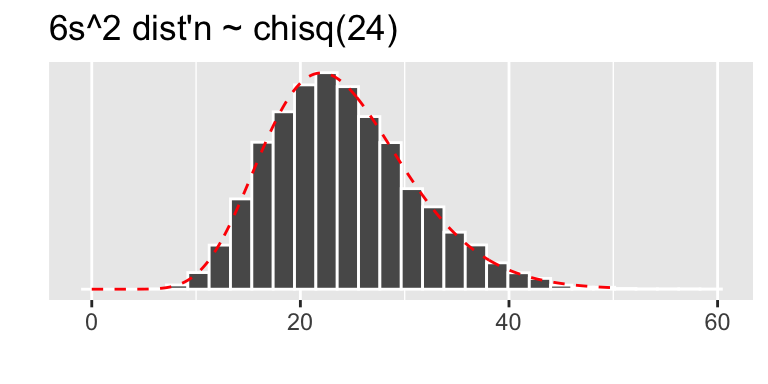
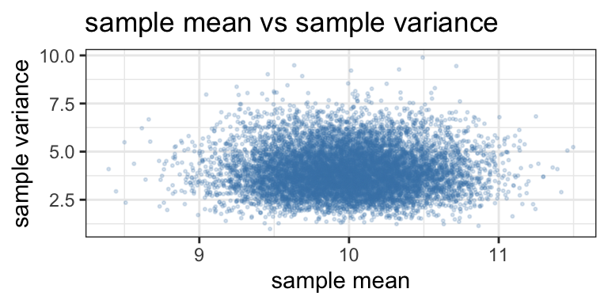

12 Central Limit Theorem
12.1 Sums of Random Variables
Suppose \(X_1, X_2, \ldots, X_n\) are random variables defined via a random sample of size \(n\) taken from a distribution that is \(N(\mu,\sigma)\).
After the sample is chosen, each \(X_i = x_i\) takes on a value (lower case corresponds to data, upper case corresponds to random variable). We may then compute the sample mean \[\overline{x} = \frac{1}{n}\sum_{i=1}^n x_i.\] Prior to picking our actual sample we can consider the function of the random variables \[\overline{X} = \frac{1}{n} \sum_{i=1}^n X_i.\]
Theorem 12.1 If \(X_1, X_2, \ldots, X_n\) represents a random sample taken from a \(N(\mu,\sigma)\) distribution, then \[\overline{X} = \frac{1}{n} \sum_{i=1}^n X_i ~\text{ is }~ N\left(\mu,\frac{\sigma}{\sqrt{n}}\right).\]
Proof. This theorem is an immediate consequence of Theorem 11.3 where each \(a_i = 1/n\).
Example 12.1 Let \(X\) equal the duration of a randomly selected song (in seconds) for a house finch. Suppose \(X\) is normal with unknown mean \(\mu\) (we’re trying to get a handle on this) and standard deviation \(\sigma = 30\) seconds (somehow we know this). A random sample of 25 song durations is observed. Find the probability that the sample mean will be within 5 seconds of the population mean \(\mu\).
If \(X_1, X_2, \ldots, X_{25}\) denote the 25 song lengths to be observed, each \(X_i \sim N(\mu,30)\), so \[\overline{X} \sim N\left(\mu,\frac{30}{\sqrt{25}}\right) = N(\mu,6).\]
We want to know \[P(|\overline{X}-\mu| < 5).\]
\[\begin{align*}
P(|\overline{X}-\mu| < 5) &= P(-5 < \overline{X}-\mu < 5)\\
&= P\left(\frac{-5}{6} < \frac{\overline{X}-\mu}{6} < \frac{5}{6}\right)\\
&= P(-5/6 < Z < 5/6).
\end{align*}\]
Using R, \(P(-5/6 < Z < 5/6)\) = pnorm(5/6)-pnorm(-5/6) = 0.595.
A secondary question: How big a sample we we need so that the likelihood of the sample mean being within 5 seconds of \(\mu\) is up to .95?
In this case, we want \(n\) so that
\[P\left(\frac{-5}{30/\sqrt{n}} < Z < \frac{5}{30/\sqrt{n}}\right) = .95.\]
Equivalently, we want to find \(n\) so that \[P\left(Z < \frac{-5}{30/\sqrt{n}}\right) = .025.\]
In \(N(0,1)\), qnorm(.025) = -1.96, which means \(P(Z < -1.96) = .025\).
So we want \[\frac{-5}{30/\sqrt{n}} = -1.96,\] and solving for \(n\) and rounding up yields \(n = 139\).
Theorem 12.2 Let \(X_1, X_2, \ldots, X_n\) represent a random sample from a \(N(\mu,\sigma)\) distribution, and \[\overline{X} = \frac{1}{n} \sum_{i=1}^n X_i ~~~ \text { and } ~~~ S^2 = \frac{1}{n-1}\sum_{i=1}^n (X_i - \overline{X})^2.\] Then \[\frac{n-1}{\sigma^2}S^2 \sim \chi^2(n-1),\] and \(\overline{X}\) and \(S^2\) are independent random variables.
We refer to \(\overline{X}\) and \(S^2\) as the sample mean and sample variance associated with the random sample.
Suppose we draw a sample of size \(n = 25\) from a \(N(10,2)\) distribution. In this case the preceding two theorems tell us that
- \(\overline{X} \sim N(10,2/\sqrt{25}) = N(10,0.4)\)
- \(6 S^2 \sim \chi^2(24)\) (since \(\frac{n-1}{\sigma^2} = 6\) in this case)
- \(\overline{X}\) and \(S^2\) are independent random variables.
Let’s look at a simulation in R to investigate these statements. The simulation works like this:
- Draw a random sample of size \(25\) from \(N(10,2)\)
- Calculate \(\overline{x}\) and \(s^2\) from this sample.
- Repeat steps 1 and 2 for many trials, and then consider - a frequency plot for \(\overline{x}\) (does it look \(N(10,0.4)\)) - a frequency plot for \(\frac{n-1}{\sigma^2}s^2\) (does it look \(\chi^2(24)\)?) - a scatter plot of \(\overline{x}\) against \(s^2\) (do they look independent?)
trials = 10000
n = 25; mu = 10; sigma = 2 #define sample size and parameters
sample_means = c() #stores mean of each sample
sample_var = c() #stores variance of each sample
for (i in 1:trials){
x = rnorm(n,mu,sigma) #draw sample
sample_means[i] = mean(x) #record sample mean
sample_var[i] = var(x) #record sample variance
}Plots:

The scatter plot below suggests no real association between \(\overline{x}\) and \(s^2\).

12.2 T distribution
Definition 12.1 Let \(Z \sim N(0,1)\) and \(W \sim \chi^2(\nu)\). If \(Z\) and \(W\) are independent then \[\frac{Z}{\sqrt{W/\nu}}\] is said to have a t distribution with \(\nu\) degrees of freedom.
Here’s our motivation for looking at such a thing. Look again at the house finch example (Example 12.1). We took a sample of 25 song lengths to estimate \(\mu\), or rather the likelihood that \(\overline{x}\) is within 5 seconds of \(\mu\), the population mean. In our solution we assumed we know \(\sigma\). It is perhaps not reasonable to assume we know \(\sigma\) when we’re trying to estimate \(\mu\)!
So, if we don’t know \(\sigma\), can we estimate it from the sample? Sure! How about estimating \(\sigma\) with \(s\), the sample standard deviation?
Now, recall in our solution there came a point when we considered a \(Z\)-score: \[z = \frac{\overline{x}-\mu}{\sigma/\sqrt{n}}.\] If we don’t know \(\sigma\) can we replace it with the estimate \(s\)? Good question! Check this out:
From Theorem 10.4 \(\displaystyle Z =\frac{ \overline{X}-\mu}{\sigma/\sqrt{n}}\) is \(N(0,1)\)
From Theorem 12.2, \(\displaystyle\frac{(n-1)S^2}{\sigma^2}\) is \(\chi^2(n-1)\),
So the ratio \(\displaystyle\frac{Z}{\sqrt{\frac{(n-1)S^2}{\sigma^2}\big/(n-1)}}\) has a t distribution with \((n-1)\) degrees of freedom!
Finally, observe \[\begin{align*} \frac{Z}{\sqrt{\frac{(n-1)S^2}{\sigma^2}\big/(n-1)}} &= \frac{\frac{\overline{X}-\mu}{\sigma/\sqrt{n}}}{s/\sigma} \\ &= \frac{\overline{X}-\mu}{\sigma/\sqrt{n}} \cdot (\sigma/s) \\ &= \frac{\overline{X}-\mu}{s/\sqrt{n}}. \end{align*}\]
The point of this story is this:
If \(X_1,X_2,\ldots, X_n\) represents a random sample drawn from \(N(\mu,\sigma)\) then
- \(\displaystyle \overline{X} \sim N(\mu,\sigma/\sqrt{n})\)
- so \(\displaystyle Z = \frac{\overline{X}-\mu}{\sigma/\sqrt{n}}\) is \(N(0,1)\)
- while \(\displaystyle T = \frac{\overline{X}-\mu}{s/\sqrt{n}}\) is a t distribution with \(n-1\) degrees of freedom.
We denote a \(t\) distributioin with \(k\) degrees of freedom by \(t(k)\). The density function for a \(t(k)\) distribution, defined for all \(-\infty < t < \infty\), is \[f(t) = \frac{\Gamma(\frac{k+1}{2})}{\sqrt{k\pi}\Gamma(k/2)}\left(1+\frac{t^2}{2}\right)^{-\left(\frac{k+1}{2}\right)}\]
Suppose \(T \sim t(k)\).
Facts about T:
- \(E(T) = 0\)
- The distribution has mode at 0
- The distribution is symmetric about the \(y\)-axis
- it has fatter tails than \(N(0,1)\), i.e.,for \(a > 0\), \(P(t > a) > P(Z > a)\).
- As \(k \to \infty\), \(t(k) \to N(0,1)\).
Figure 12.1: A t distribution and N(0,1)
Example 12.2 A forester studying the effects of fertilization on certain pine forests is interested in estimating the average basal area (in ft\(^2\)) of pine trees. Let \(X_1, X_2, \ldots, X_9\) denote a random sample of size 9, and suppose \(X_i \sim N(\mu,\sigma)\) with \(\mu\), \(\sigma\) unknown.
Find two statistics (i.e., functions of the data) \(g_1\) and \(g_2\) such that \[P(g_1 \leq \overline{X}-\mu \leq g_2) = .9.\] (The statistics \(g_1\) and \(g_2\) thus give us a range of values we believe with probability .9 captures \(\mu\).)
Well, the statistic \[T = \frac{\sqrt{n}(\overline{X}-\mu)}{S}\] lives in a \(t(8)\) distribution.
Now \(t(8)\) is plotted in figure 12.2, and we can find constants \(c\) and \(-c\) such that the shaded area between them is 0.9.
Figure 12.2: Finding the middle 90% of a t(8) distribution
Using R, in which the t distribution is aptly named as t, \(c\) and \(-c\) are readily found with qt():
## [1] 1.859548So \[P(-1.86 < T < 1.86) = .9,\] where \(T = 3(\overline{X}-\mu)/S\), and this allows us to solve the problem:
\[\begin{align*} .9 &= P(-1.86 < T < 1.86)\\ &= P(-1.86 < 3(\overline{X}-\mu)/S < 1.86) < 1.86) \\ &= P(\frac{-1.86}{3}S < \overline{X}-\mu < \frac{1.86}{3}S )\\ &= P(-.62 S < \overline{X}-\mu < .62 S) \end{align*}\]
So \(g_1 = -.62S\) and \(g_2 = .62S\) work!
In practice, this means that, once we have gathered our data of size \(n = 9\), it is “likely” that \(\mu\) is captured by the interval \[(\overline{X} - .62S, \overline{X} + .62S).\]
For instance, suppose our data is (units are ft\(^2\))
It is “likely” that \(\mu\) falls between xbar-.62*s = 65.3 ft\(^2\) and xbar-.62*s = 74.9 ft\(^2\).
The Central Limit Theorem says, roughly, that even if the underlying population is not normally distributed, it is still reasonable to follow this procedure to estimate \(\mu\).
12.3 The Central Limit Theorem
Theorem 12.3 (Central Limit Theorem) Let \(X_1, X_2, \ldots, X_n\) be independent and identically distributed random variables with \(E(X_i) = \mu\) and \(V(X_i) = \sigma^2\) for \(i = 1,2,\ldots,n\). Let \[\overline{X} = \frac{1}{n}\sum_{i=1}^n X_i ~~~ \text{ and } ~~~ U_n = \frac{\overline{X}-\mu}{\sigma/\sqrt{n}}.\] Then the distribution function of \(U_n\) converges to a standard normal distribution function as \(n \to \infty\).
The Central Limit Theorem (CLT) is the mathematical basis for the statistical analysis coming in the next chapter.
Sketch of Proof
TODO
Example 12.3 (Practical Use of the CLT) For large \(n\), \[\frac{\overline{X}-\mu}{\sigma/\sqrt{n}} \sim N(0,1)\] for a random sample taken from any distribution. That is, for any distribution (Poisson, binomial, gamma, uniform, …) with mean \(\mu\) and standard deviation \(\sigma\), if we take a simple random sample (SRS) of decent size, compute the sample mean, then this mean lives in a distribution that is approximately \(N(\mu,\sigma/\sqrt{n})\). Consequently, \[\frac{\overline{X}-\mu}{S/\sqrt{n}}\] will be approximately \(t(n-1)\).
Example 12.4 (Can we really walk straight?) Data on cadence (strides/sec) from a 1992 article in the American Journal of Physical Anthropology, for a sample of size \(n = 20\) “randomly selected healthy men.”
data = c(0.95, 0.85, 0.92, 0.95, 0.93, 0.86, 1.00, 0.92, 0.85, 0.81,
0.78, 0.93, 0.93, 1.05, 0.93, 1.06, 1.06, 0.96, 0.81, 0.96)The sample mean and standard deviation for these data are
- \(\overline{x}\) = 0.925
- \(s\) = 0.081.
We know that \(T = \frac{\overline{X}-\mu}{S/\sqrt{n}}\) has a t(19) distribution (assuming the underlying population is normal), and we can find \(c\) such that \[P(|(\overline{x}-\mu)/(s/\sqrt{n})| < c) = .95.\]
12.4 Normal Approximation to a binomial distribution
If \(X\) is binom\((n,p)\), we can view \(X\) as a sum of Bernoulli random variables: \(X = \sum_{i=1^n}Y_i\) where each \(Y_i\) is binom\((1,p)\) [so \(P(Y_i = 1) = p\) and \(P(Y_i = 0) = 1-p\), and \[\mu_{Y_i} = p ~~~\text{ and } ~~~ \sigma_{Y_i} = \sqrt{p(1-p)}.\]
And \[\frac{1}{n}X = \frac{1}{n}\sum_{i=1}^n Y_i.\] By the Central Limit Theorem, for large \(n\), it follows that \(\frac{1}{n}X\) is approximately \(N(p,\sqrt{p(1-p)/n})\).
If \(X\) is \(\text{binom}(n,p)\) then \(X\) is approximately \(N(np, \sqrt{np(1-p)})\) for large \(n\).
Let’s look at an example and then fine tune the approximation with a continuity correction.
Example 12.5 Suppose 44% of a voting population actually plan to vote for candidate A (though we don’t know this :)). If we draw a random sample of \(n = 100\) voters, what is the approximate probability that 51 or more of the 100 sampled plan to vote for candidate A?
If we know the size of the population we can answer this question precisely with the hypergeometric distribution:
For instance, suppose the population consists of 10000 voters, and \(X\) equals the number of voters in a sample of size 100 that plan to vote for candidate A. Then for any \(x = 0, 1, \ldots, 100\), \[p(x) = \frac{\binom{4400}{x}\binom{5600}{100-x}}{\binom{10000}{100}},\] and \[P(X \geq 51) = \sum_{x = 51}^{100} p(x),\] and this sum can be calculated in R by:
## [1] 0.09442696about a 9.4% chance.
Notice, if the populatioin is just 1000, the answer to this question would be 1-phyper(50,440,560,100) = 0.0840868.
If we don’t know the size of the population, but assume it’s big, then the sampling process is close to that of 100 identical Bernoulli trials, where in each case, \(p = .44\). In this case, \(X\) is \(\text{binom}(n=100,p=.44)\), and \(P(X \geq 51)\) is found in R via
## [1] 0.09553862Notice that the binomial approximation here is closer to the actual probability calculated with the hypergeometric distribution for \(n = 10000\) than for \(n = 1000\).
Finally, let’s approximate the likelihood with a normal distribution.
According to the Central Limit Theorem, \(X\) is approximately \(N(44,\sqrt{100(.44)(.56)})\), or \(N(44,4.964)\).
So \(P(X \geq 51) = 1 - P(X < 51)\) = 1 - pnorm(51,44,4.964) = 0.079.
This normal estimate is a little low, and we can improve the estimate by making what is called a continuity correction.
Continuity Correction
Suppose \(X\) is \(\texttt{binom}(100,.44)\), as in the voting example, and we want to estimate \(P(51 \leq X \leq 55)\) by using the normal approximation \(N(44,\sqrt{100(.44)(.56)})\).
The actual binomial probability can be represented as the sum of the 5 rectangle areas in Figure 12.3. Each rectangle has width 1, and the heights of the rectangles correspond to \(P(X = x)\) (binomial probability) for each \(x = 51,\ldots,55.\) We also see in the figure a portion of the \(N(44,\sqrt{100(.44)(.56)})\) density curve \(f(x)\). The area under \(f\) that best approximates the rectangle areas will be the integral with bounds [50.5,55.5] (whose area is shaded in the figure), as opposed to the integral with bounds [51,55].
Figure 12.3: Continuity correction to estimate a binomial probability with a normal curve
In other words, to better approximate \(P(51\leq X \leq 55)\) with a normal distribution, instead of evaluating \(\int_{51}^{55} f(x)~dx\), we should use a continuity correction and evaluate \[\int_{50.5}^{55.5} f(x)~dx.\]
Observe:
- Actual value of \(P(51\leq X \leq 55)\):
sum(dbinom(51:55,100,.44))= 0.08503
- Normal approximation without continuity correction:
pnorm(55,44,4.964)-pnorm(51,44,4.964)= 0.0659
- Normal approximation with continuity correction:
pnorm(55.5,44,4.964)-pnorm(50.5,44,4.964)= 0.08493
Now, we return to our voting example and the normal approximation to the probability that at least 51 people in a sample of 100 people will vote for candidate \(A\). With a continuity correction, \(P(X \geq 51)\) is better approximated with:
## [1] 0.09519473Here’s one more example.
Example 12.6 Use continuity correction to estimate \(P(460 \leq X \leq 480)\) if \(X\) is \(\texttt{binom}(1000,.5)\).
Well, with a continuity correction \[P(460 \leq X \leq 480) \approx P(459.5 \leq Y \leq 480.5),\] where \(Y \sim N(500,\sqrt{1000(.5)(.5)})\).
- Actual probability:
pbinom(480,1000,.5)-pbinom(460,1000,.5)= 0.1025.
Estimated probability: pnorm(480.5,500,sqrt(250))-pnorm(459.5,500,sqrt(250)) = 0.1035.